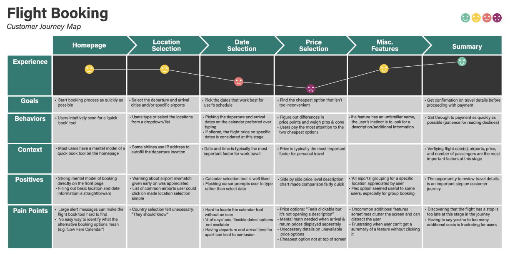

Home
FlyUX Website
FlyUX - Research and Analysis
Furniture
Interactive Wall
Sophunky Branding
About Me
The first step in understanding and identifying patterns using research data gathered from competitive benchmarking, surveys and usability tests.

This document visualizes steps needing refinement/pain points in the flight booking process.
This document follows one common use case and helps pin down the steps and wireframes needed to complete the flight booking process.